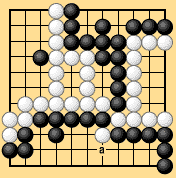

| 3.5 The Disadvantage of Area Rules |
|---|
|
But area rules have one conspicuous disadvantage. This disadvantage is not a logical defect, but it detracts from the interest of go as a game. The problem arises in positions like Dia. 3-7. Only neutral points are left, the number of neutral points is even, the black group at the bottom has lost its outside liberties, and the safety of this group is uncertain. Suppose it is Black's turn. Even if Black plays 'a' to remove the danger, he can still get one of the two neutral points. Under area rules, that is, he can make a free reinforcing move at 'a.' He does not need to verify whether it is actually necessary. |
|  |
| Dia. 3-7 |
|---|
|
This may not be illogical, but you could say that it makes go less interesting as a game. That is the drawback of area rules. We will refer to this as the problem of reinforcing when there are an even number of neutral points. Under territory rules, an unnecessary reinforcement always costs the player who makes it one point. In Dia. 3-7, if Black can read out that a reinforcement at 'a' is not necessary then of course he will not reinforce there. If he cannot read the position out but decides that there is significant risk, he may reinforce, but he will realize that he may be losing a point. In either case, he is called on to think. There are no logical defects in area rules: they are concise and everything is settled by actual play. If the problem of reinforcing when there are an even number of neutral points could be solved, the solution would be a valuable advance for area rules. |